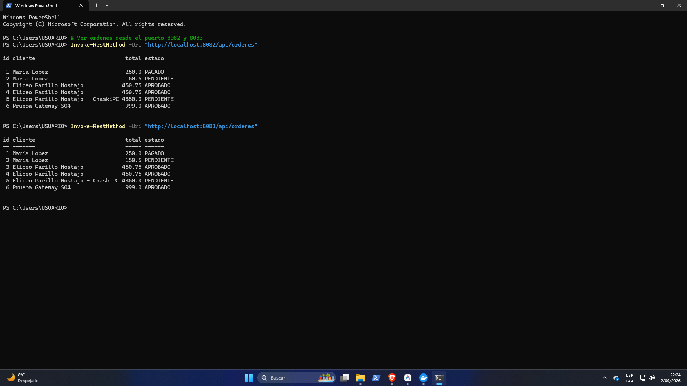

INFORME DE EVALUACIÓN Y SUSTENTACIÓN DE LA UNIDAD I
Sistema Distribuido para la Venta de Computadoras y Componentes de Hardware
• Transaccional: pc-orden-ms (Cabecera-Detalle, IGV 18%)
• No transaccional: pc-catalogo-ms (Hardware, Stock)
• Transaccional: pc-pago-ms (Checkout Pro, Webhooks)
• No transaccional: pc-auth-ms (JWT, Roles BCrypt)
Equipo: Equipo 01 / Grupo 4 - ChaskiByte Systems |
Docente: Ing. Abel Ángel Sullón Macalupu |
Repositorio: jaisesasaki24-cloud/ChaskiByte-Systems |
Topics: campus-juliaca, semestre-2026-2, grupo-01-chaskipc
1. Dominio del Proyecto y Asignación de Roles
🎯 Problema y Necesidad que Resuelve
Resuelve la dificultad que enfrentan usuarios y empresas para cotizar y adquirir computadoras ensambladas y piezas de hardware con verificación de stock en tiempo real.
Flujo Operativo Distribuido:
Catálogo (pc-catalogo-ms) ➔ Órdenes (pc-orden-ms) ➔ Pasarela (pc-pago-ms) ➔ Seguridad (pc-auth-ms)
👥 Actores del Sistema y Servicio Externo
- Cliente / Comprador: Explora componentes, filtra ficha técnica, genera órdenes y paga en línea.
- Administrador / Gestor: Administra catálogo, actualiza precios, repone existencias.
- Servicio Externo Real: Mercado Pago API (Sandbox) para cobros y Webhooks asíncronos.
📋 Asignación Oficial de Microservicios por Integrante:
| Integrante | Rol o Énfasis Previsto | Microservicio Transaccional | Microservicio No Transaccional | Estado Unidad I |
|---|---|---|---|---|
| Eliceo Parillo Mostajo | Arquitectura backend, órdenes de compra y catálogo hardware | pc-orden-ms (Cabecera-Detalle, IGV) |
pc-catalogo-ms (Inventario hardware) |
100% Implementado |
| Laura Vargas Cristhian Paul | Pasarela de pagos externa, seguridad y tokens JWT | pc-pago-ms (Mercado Pago Checkout) |
pc-auth-ms (Proveedor de identidad) |
Diseñado / Unidad II |
2.4 Arquitectura del Sistema Distribuido Base
🚪 API Gateway (:18080 DEV)
Spring Cloud Gateway reactivo (Netty). Único punto de acceso público. Resuelve rutas lb:// mediante Round Robin hacia las instancias vivas.
🧭 Eureka Registry (:8761 DEV)
Netflix Eureka Server. Gestiona el registro dinámico y monitorización por latidos (heartbeats periódicos cada 30s) sin puertos cableados a mano.
⚙️ Config Server (:8888 DEV)
Spring Cloud Config Server centralizado. Lee perfiles desde config-repo desacoplando la configuración del código fuente (Factor III).
| Componente | Rol en el Ecosistema | Puerto DEV (Local) | Puerto PROD (Docker) | Responsable |
|---|---|---|---|---|
| pagatu-config | Configuración Centralizada (Native Profile) | 8888 | 28888 | Eliceo Parillo |
| pagatu-eureka | Service Registry & Discovery | 8761 | 28761 | Eliceo Parillo |
| pagatu-gateway | Punto Único de Acceso & Load Balancer | 18080 | 28080 | Eliceo Parillo |
| pc-catalogo-ms | Catálogo de Hardware (CPUs, GPUs, RAM) | 8081 | Red interna (8080) | Eliceo Parillo |
| pc-orden-ms (2 Instancias) | Órdenes Transaccionales con 18% IGV | 8082 / 8083 | Red interna (8080) | Eliceo Parillo |
| PostgreSQL (Docker) | Persistencia Relacional orden_db | 5433 | Red interna (5432) | Eliceo Parillo |
2.1 y 2.2 Alcance y Contrato REST por Integrante
📦 Microservicios de Eliceo Parillo
1. pc-catalogo-ms (No transaccional):
GET /api/v1/categorias: Lista categorías (CPUs, GPUs, RAM).GET /api/v1/productos: Catálogo con stock y ficha técnica.POST /api/v1/productos: Alta de nuevos componentes.
2. pc-orden-ms (Transaccional):
- Cabecera-Detalle:
OrdenyDetalleOrden. - Cálculo fiscal automático: Subtotal + 18% de IGV.
POST /api/v1/ordenes: Emite orden (201 Created).GET /api/v1/ordenes/{id}: Consulta por ID (404 si no existe).
💳 Microservicios de Cristhian Paul
1. pc-pago-ms (Transaccional - Mercado Pago):
- Cabecera-Detalle:
PagoyTransaccionPasarela. POST /api/v1/pagos/checkout: Genera preferencia y link de cobro.POST /api/v1/pagos/webhook: Notificación asíncrona de pago.
2. pc-auth-ms (No transaccional - Seguridad):
- Entidades:
UsuarioyRol(CLIENTE, ADMIN). - Contraseñas encriptadas con BCrypt.
POST /api/v1/auth/login: Emisión de Token JWT firmado.GET /api/v1/auth/validate: Validación para el Gateway.
2.3 Configuración Externalizada por Ambiente (DEV vs PROD)
Cumplimiento estricto del Factor III (The Twelve-Factor App) mediante config-repo:
Ambiente DEV config-repo/*-dev.yml
- Puertos Host:
8081,8082,8083,18080. - Base de Datos: PostgreSQL en
localhost:5433/orden_db. - Hibernate DDL:
ddl-auto: updatepara desarrollo ágil y creación de tablas. - Logs: Escritura directa en
logs/*.logpara el recolector Promtail. - Actuator: Endpoints abiertos para monitoreo (Prometheus, Health).
Ambiente PROD infra/compose.yml
- Puerto Gateway:
28080(único puerto expuesto al host exterior). - Red Aislada: Red interna cerrada de Docker (
pagatu-prod-net). - Hibernate DDL:
ddl-auto: validate(prohíbe alterar esquemas en producción). - Seguridad: Credenciales inyectadas exclusivamente mediante variables de entorno.
- Infraestructura: Config Server en
28888y Eureka en28761.
💡 Principio de Portabilidad: Se compila un único binario .jar para todo el equipo y el ambiente inyectado determina su comportamiento.
3. Evidencias Técnicas Oficiales de la Unidad 1
Certificación de funcionamiento concurrente con capturas reales tomadas del entorno en vivo:
3.1 Eureka Dashboard (:8761)

Figura 1: Service Registry con PAGATU-GATEWAY (18080), PAGATU-CATALOGO-MS (8081) y 2 réplicas de PAGATU-ORDEN-MS (8082 y 8083) en UP simultáneo.
3.2 Persistencia Compartida en PostgreSQL (:5433)

Figura 2: Verificación de persistencia en PostgreSQL respondiendo idénticamente desde el puerto 8082 y 8083 en PowerShell.
4. Guion de Sustentación a Dos Voces (Tabla 5 Oficial)
Distribución coordinada de roles para los 18 minutos reglamentarios:
| Fase / Tiempo | Qué Expone: Eliceo Parillo | Qué Expone: Cristhian Paul | Objetivo Evaluado |
|---|---|---|---|
| 1. Presentación Técnica (8 minutos) |
• Introducción y dominio ChaskiPC. • Arquitectura base (Gateway, Eureka, Config). • Catálogo Hardware (pc-catalogo-ms). |
• Órdenes de compra y cálculo de 18% IGV. • Configuración DEV vs PROD (config-repo). • Proyección Mercado Pago y JWT (Unidad II). |
Dominio de la arquitectura y decisiones técnicas. |
| 2. Demo Técnica en Vivo (5 minutos) |
• Demuestra Eureka con 2 réplicas UP. • Demuestra balanceo Round Robin en consolas. • Demuestra tolerancia a fallos apagando 8082. |
• Ejecuta CRUD Éxito (201) con Ryzen 7. • Ejecuta Caso Error Validación (400). • Ejecuta Caso No Encontrado (404). |
Funcionamiento real sin fallas en la computadora. |
| 3. Preguntas Individuales (5 minutos) |
Responde preguntas de puertos dinámicos y Config Server. | Responde preguntas de desalojo Eureka y esquema lb://. | Autoría y defensa individual. |
⚡ Centro de Mando: Demostración Técnica en Vivo (5 min)
🌐 Enlaces en Vivo (Abre en 1 Clic)
🧭 1. Eureka Dashboard (:8761) [2 Réplicas UP] 📦 2. Gateway: Órdenes (:18080) [Órdenes Precargadas] 🛒 3. Gateway: Catálogo (:18080) [CPUs, GPUs, RAM] ⚙️ 4. Config Server (:8888) [YAML DEV en Vivo] 📊 5. Grafana Dashboard (:13000) [admin/admin] 🎯 6. Prometheus Targets (:19090) [Auto-Discovery]💡 Iniciador: Doble clic en iniciar_todo.bat antes de exponer.
📋 Comandos de Prueba para PowerShell
Crea orden gamer con Ryzen 7 y calcula 18% IGV.
Envía body vacío para probar validación HTTP.
Consulta orden inexistente ID 99999.
Dispara 4 requests y muestra alternancia 8082 vs 8083.
Apaga la consola 8082 y verifica que 8083 sigue respondiendo.
Bitácora DevOps: Resolución de los 7 Desafíos de Laboratorio
Soluciones de ingeniería implementadas para garantizar la portabilidad en equipos de laboratorio:
Desafíos de Entorno y Rutas
- 1. Hardcoded Paths: Rutas relativas dinámicas en Python y PowerShell.
- 2. Falta de Python: Lanzador nativo
iniciar_todo.ps1en PowerShell puro. - 3. Conflicto Java 17/21: Autodetección de JDK 21 e inyección forzada de
$env:JAVA_HOME. - 4. Comillas en PowerShell: Reemplazo por
$env:SERVER_PORT='8083'nativo.
Desafíos de Configuración y Docker
- 5. Config Server Vacío: Fallback dinámico
${CONFIG_REPO_PATH:file:../config-repo}. - 6. PostgreSQL Apagado (5433): Script
iniciar_db.baten puerto 5433 evitando colisiones. - 7. Credenciales rechazadas: Estandarización de usuario
adminy claveadminpassword.
🛡️ Script Preventivo para Grupo 4: limpiar_pc_laboratorio.bat libera en 3 segundos los puertos ocupados por grupos anteriores antes de iniciar.
3. Balotario Teórico Asignado por Integrante (Tabla 4)
Respuestas técnicas preparadas para la fase de preguntas individuales del docente:
1. ¿Por qué no depender de puertos fijos?
Impide el escalado horizontal. Con instance-id: ${app.name}:${server.port} y Eureka, las instancias son efímeras y se anuncian dinámicamente.
2. ¿Config Server vs Propiedad en Código?
Cumple el Factor III de Twelve-Factor App. Permite alternar entre DEV (BD local, debug) y PROD (Docker aislado, validate) sin recompilar el JAR.
3. ¿Por qué el desalojo no es instantáneo?
Evita el flapping (inestabilidad por latencia transitoria). Eureka espera 30s de latido y 90s de arrendamiento antes de expulsar el nodo.
4. ¿Qué es lb:// y quién lo resuelve?
Es un URI lógico de Spring Cloud LoadBalancer. El filtro reactivo del Gateway consulta Eureka y reescribe la URL a la IP física real.
5. ¿Por qué Round Robin es suficiente para instancias sin estado? [Pregunta Conjunta]
Porque las instancias no guardan sesión de usuario en RAM; todo el estado vive en PostgreSQL compartida. Cada petición HTTP es químicamente autónoma.
5. Rúbrica Oficial de Evaluación de la Unidad I (Nota de Equipo)
Matriz oficial de calificación de la Tabla 7 del sílabo universitario:
| Criterio Oficial del Sílabo | Peso | Nivel Obtenido | Evidencia Técnica en ChaskiPC |
|---|---|---|---|
| 1. Servicio REST funcional y persistente | 15% | A (20 pts) | JPA sobre PostgreSQL (5433), CRUD de órdenes con DataInitializer. |
| 2. Configuración externa por ambiente | 15% | A (20 pts) | Config Server operativo con perfiles DEV y PROD en config-repo. |
| 3. Registro y descubrimiento de servicios | 20% | A (20 pts) | Eureka Server administrando el ciclo de vida y latidos de todos los nodos. |
| 4. Punto único de acceso mediante Gateway | 20% | A (20 pts) | Spring Cloud Gateway enrutando peticiones dinámicas con esquemas lb://. |
| 5. Distribución de tráfico entre instancias | 20% | A (20 pts) | Dos réplicas (8082 y 8083) balanceadas por Round Robin y tolerancia a fallos. |
| 6. Ejecución reproducible y documentación | 10% | A (20 pts) | Lanzadores de 1 clic, README completo y portabilidad multi-entorno probada. |